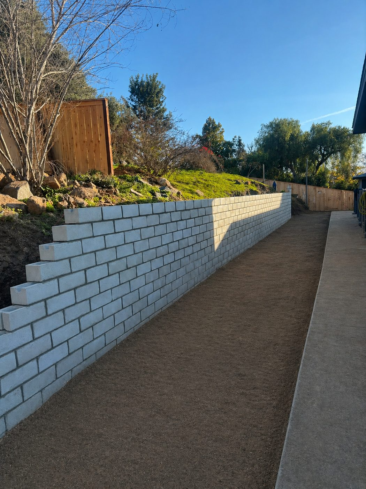

Retaining Walls for San Diego Hillside Properties & Slope Stabilization
Concrete block, natural stone, and architectural retaining walls built for San Diego's hillside terrain. Engineered for slope stabilization, proper drainage, and long-term performance — all trades handled in-house since 1993.

Built to hold. Designed to last.
From basic slope stabilization to architecturally finished garden walls, we build retaining walls that handle San Diego's soil conditions, drainage demands, and HOA requirements — with no subcontractors, no shortcuts.
Concrete Block Walls
CMU and segmental block retaining walls — the most cost-effective, structurally sound solution for most San Diego residential slope and grading projects.
Natural & Artificial Stone Walls
Stone-faced retaining walls that blend with the landscape. Natural and artificial stone options finished to match your home's architecture and HOA guidelines.
Stepped & Terraced Walls
Multi-tier stepped walls for steep hillside properties — turning unusable slope into flat, usable yard space and stable, landscaped terraces.
Drainage & Waterproofing
Gravel backfill, drainage pipe, and waterproofing installed behind every wall to relieve hydrostatic pressure and prevent long-term failure.
Hillside & Slope Stabilization
Engineered wall systems for steep grades and erosion-prone hillsides common throughout San Diego's coastal and inland properties.
Garden & Planter Walls
Low decorative retaining walls, raised planters, and garden borders that add structure and usable growing space to your outdoor living area.
A retaining wall built to stay put — the first time.
Retaining wall failures usually come down to poor drainage, undersized footings, or subcontracted labor with no accountability. We've been building walls that don't move for over 30 years because we control every step in-house.
Drainage built in from the start
Hydrostatic pressure behind a wall is what causes failure. We install gravel backfill and drainage pipe on every wall — not as an add-on, but as a standard part of every build.
All trades in-house
Demo, excavation, footings, block, stone, drainage, and backfill — our own crew handles every step. No subs, no handoffs, no gaps in quality or accountability.
San Diego hillside experience
We've built walls on San Diego's most challenging hillside sites — coastal clay, sandy inland soils, steep grades, tight side yards. Thirty years of local experience means fewer surprises on your project.
Transparent pricing from the start
Your bid is clear before we break ground. If site conditions require a change order, we communicate it upfront and get your approval before moving forward — no surprises buried in the final invoice.
Ready to stabilize your San Diego slope?
Schedule a free on-site evaluation. We assess the grade, soil, and drainage, then give you a straight quote on the right wall for your property.
Built to last. Designed to impress.
From outdoor living spaces and stamped concrete to retaining walls and custom stonework — every project built by our crew, start to finish.
View Recent ProjectsTrusted by San Diego homeowners.
"John and his crew did a fantastic job. Very professional and we love the results. I would definitely use John for future projects and recommend him to anyone."
What San Diego homeowners ask before we break ground.
Let's talk about your San Diego retaining wall.
No sales pitch. No pressure. A free on-site assessment and quote — that's it.
Fast response from our local San Diego team — North County, Coastal, Inland, South Bay and everywhere in between.